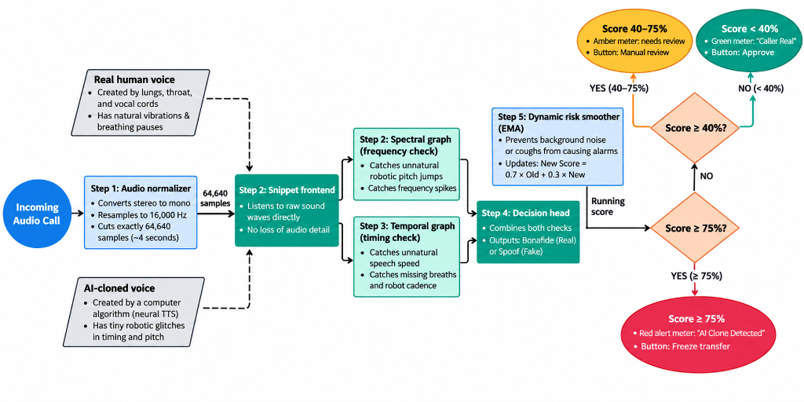

Suraksha Sonic listens to live banking calls, scores every second of raw audio for synthetic vocoder artifacts using AASIST, and freezes the transaction automatically the moment a clone is detected — not after.
Neural speech synthesis can now reproduce a specific person's voice — accent, cadence, breathing pauses and all — from a few seconds of source audio pulled off a video call, a podcast, or a leaked recording. Threat actors use this to impersonate CXOs, bank customers, and officials to authorize transfers or extract confidential information over VoIP and mobile networks.
Caller ID, manual call-back, and "I recognize that voice" are the checks most institutions still rely on. None of them were designed to catch a voice that was never spoken by a human being at all.
No mainstream telephony stack scores voice authenticity while the call is still happening — most detection is forensic, after the fact.
Detection built for Western-accented speech degrades badly on Indian English and regional accents — exactly the population most institutions here need to protect.
An alert alone isn't a defense. Without an action tied to the score, a human still has to notice, decide, and intervene — often too late.
From raw waveform micro-acoustic analysis to autonomous banking ledger freeze in under 90 milliseconds.

Audio is normalized to 16 kHz mono float32 with a 64,640-sample sliding window. SincNet learnable filterbanks process raw sound waves directly with zero loss of spectral phase detail.
A heterogeneous graph neural network evaluates both Spectral (frequency jumps/vocoder spikes) and Temporal (speech cadence/missing breaths) nodes, feeding into the Bonafide vs. Spoof decision head.
Dynamic smoother ($0.70 \times \text{Old} + 0.30 \times \text{New}$) prevents coughs or street noise from causing false alarms. Automatically branches into GREEN (<40%), AMBER (40–75% Step-Up OTP), or RED (≥75% Instant Freeze).
Audio never sits still long enough to be "reviewed" — each stage hands off to the next in real time, from the moment the call connects to the moment (if needed) it's cut.
Every number below comes from the fine-tuned checkpoint evaluated against a test split the model never saw during training.
Our held-out test split has 756 deepfake clips but only 30 genuine Indian-voice clips — a real imbalance we inherited from how IndieFake is composed. That's exactly why precision-on-genuine-voice (20.2%) looks weak next to accuracy (86.4%): a handful of misclassified genuine samples swings that number hard. We're prioritizing collecting more verified genuine Indian-accent audio before the next fine-tune.
At our current operating threshold, 103 of 756 clones (13.6%) still slip through as genuine — consistent with our 13.48% EER, and separately, 4 of 30 genuine voices (13.3%) get misflagged as clones. The 70/30 EMA and the AMBER step-up tier exist precisely to catch a sustained attack — or recover from a single bad frame — rather than deciding everything off one second of audio.
Suspicious transactions are frozen before funds leave the account — not flagged in a report the next morning.
Verified voices pass silently in the background; only suspicious or cloned audio triggers step-up verification.
SHA-256 evidence hashes give institutions legal proof of a detection event while raw voice data is never retained.
Fine-tuned on Indian-accented genuine and synthetic speech, not adapted after the fact from a Western-accent model.
Enterprise Voice Biometrics & Deepfake Fraud Interlock Platform